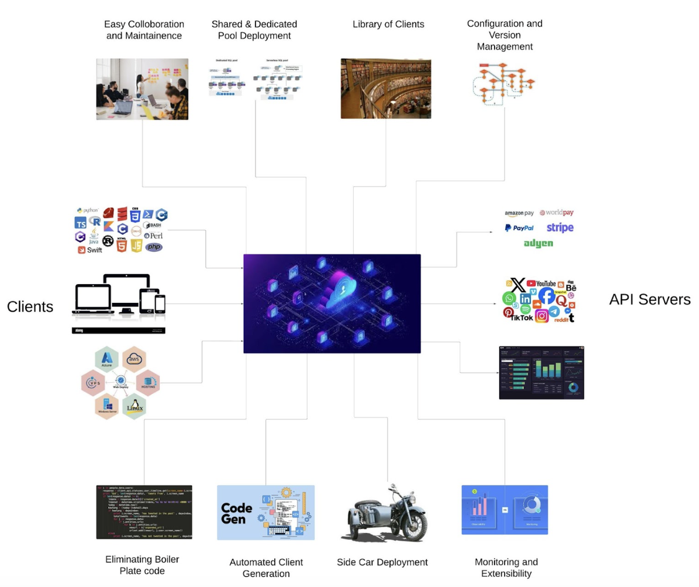
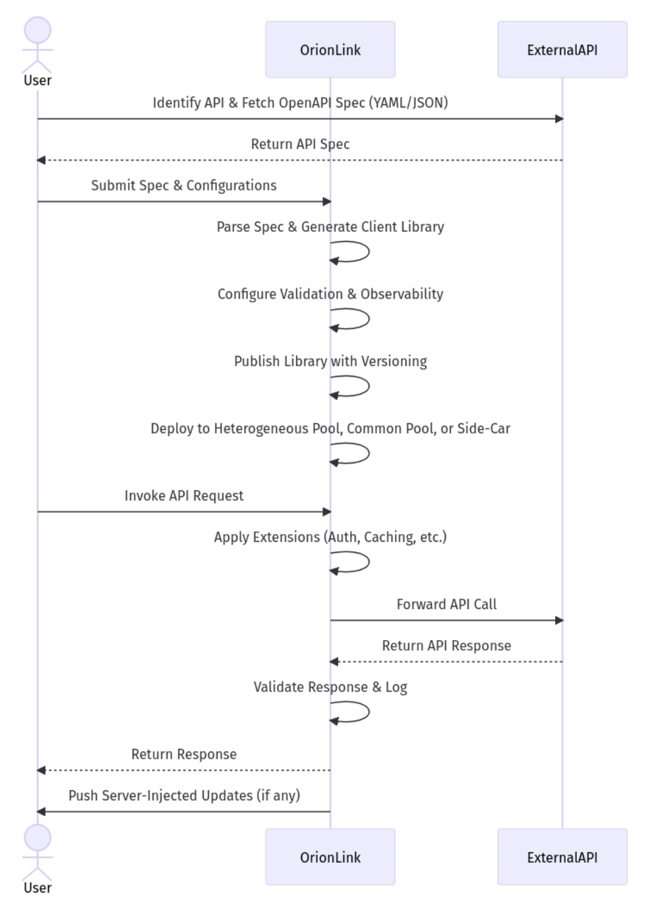
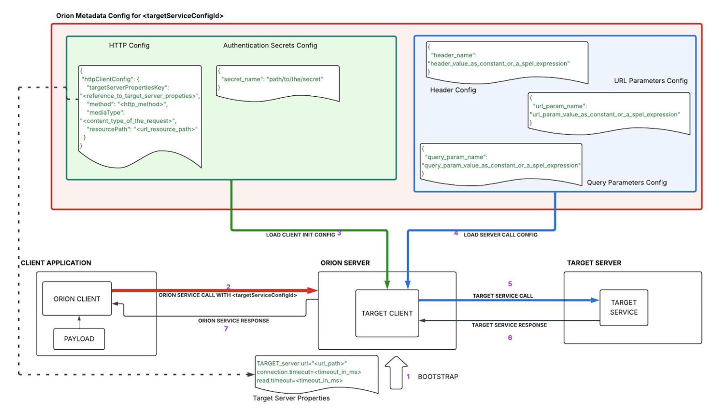

Automation and Scaling of OpenAPI Integrations: A Federated Solution
Abstract
OpenAPI specifications standardize REST API contracts, but large organizations still face considerable complexity when consuming those APIs at scale. Developers must retrieve and interpret specification files, generate client code, configure authentication and retries, manage versioning, and keep integrations aligned across many teams. This technical-report edition describes Orion Link, a federated OpenAPI client gateway offered as a managed hosted service to centralize these concerns. Orion Link automates client generation, configuration management, version handling, monitoring, and extensibility while also supporting a sidecar deployment model for lower-latency execution. The article argues that a federated, centrally governed OpenAPI client layer can reduce repetitive boilerplate code, improve consistency across distributed teams, and simplify operational maintenance for HTTP-based integrations.
Keywords: OpenAPI, API gateway, federated architecture, managed hosted service, client generation, sidecar deployment, versioning, enterprise integration
Author note: This archival technical-report edition is adapted from the LinkedIn article first published on August 8, 2025. The web version below reconstructs the article diagrams as Mermaid diagrams for maintainability, while the downloadable PDF preserves a compile-ready version for scholarly indexing.
1. Introduction
In the modern development landscape, OpenAPI specifications have become indispensable for creating uniform and well-documented APIs. However, as these standards permeate the industry, developers face new challenges in accessing and integrating REST APIs. Programmatically consuming APIs now involves understanding specification files, generating client code, implementing authentication protocols, and managing version control, all of which require additional skill and effort from end-user developers.
These problems become more pronounced at organizational scale. When a single OpenAPI-backed service is consumed by hundreds of distributed teams, maintaining consistent integrations, managing configurations, and ensuring smooth version transitions create significant coordination overhead. Fragmented client implementations can lead to drift between teams, duplicated boilerplate, and higher maintenance cost.
To address these challenges, this article introduces Orion Link, a federated OpenAPI client gateway offered as a managed hosted service. Orion Link centralizes client-side code generation, configuration management, and version control while preserving flexibility for runtime execution. The overall goal is to reduce developer effort and make API consumption more consistent, scalable, and maintainable across large organizations.
2. Orion Link Vision
Orion Link is a federated gateway connecting a wide array of auto-generated OpenAPI-based clients. By streamlining API consumption, automating client-side code generation, and managing configurations and versioning, Orion Link simplifies integration and maintenance. Its modular architecture fosters collaboration across diverse clients and development teams, ensuring efficient and scalable API interactions.

3. Features
- OpenAPI Centric: All clients are generated from standard OpenAPI specifications, ensuring consistency and type safety.
- Managed Service: Orion Link runs as a hosted gateway that applications call to execute requests. It handles the overhead of fetching specs, generating code, and orchestrating traffic.
- Client-Side Focus: Despite being centrally hosted, Orion Link is designed to inject or sidecar the generated client logic near the application's runtime, minimizing latency while still benefiting from centralized configuration, monitoring, and version control.
- Sidecar Model: Applications can run an Orion Link sidecar container or module in the same pod or runtime environment. This bypasses a remote server hop for critical paths while still consuming centrally managed configuration.
4. Practical Usage Scenarios
Orion Link is particularly effective for applications integrating with external services using standard HTTP APIs. By generating structured client-side code from OpenAPI specifications, Orion Link simplifies configuration management and version control. It is especially attractive in environments that prioritize consistency, streamlined API consumption, and lower maintenance overhead.
Because the platform reduces repeated work such as setting up HTTP clients, wiring connections, and re-implementing retries or serializers, development teams can avoid fragmented client logic. Its automatic versioning model also helps organizations adapt to frequently changing APIs without repeated manual redeployments. In large-scale operations, Orion Link supports consistency across many API consumers by giving teams a centralized management layer instead of duplicated integration code.
5. Value Addition
Orion Link accelerates development by automatically generating client code from OpenAPI specifications, greatly reducing developer effort and eliminating duplication. By centralizing client generation and deployment, it reduces integration errors and enforces more consistent handling across teams. Applications can also benefit from a smaller runtime footprint by reusing Orion Link's managed connection pools and centralized configuration.
Managed deployments and versioning enable updates without hand-maintained redeployments, allowing teams on different platforms to keep using a shared integration layer. The main trade-off is additional latency from an extra hop per request, roughly a two-hop cost in hosted mode, though that can be mitigated in many cases with the sidecar model.
6. Usage Within eBay
The article identifies vendor-management workloads as a primary target. Communications with external vendors usually happen through REST endpoints defined by OpenAPI contracts, making them strong candidates for a shared federated client gateway. The same architecture is also positioned as useful for rapid prototyping against new services and for low-traffic internal services where the effort of creating and maintaining dedicated OpenAPI clients would otherwise exceed the value of the integration.
7. Limitations
Despite its benefits, Orion Link is not a universal integration layer. It introduces additional latency because requests often take an extra hop through the gateway, which may be unsuitable for ultra-low-latency systems. Although the sidecar or direct library model can reduce that overhead, the architecture is still best aligned with workflows where reliability, consistency, and ease of integration are more important than absolute speed.
Orion Link is also not designed for real-time communication patterns such as WebSockets or gRPC streaming. Its strengths lie in transactional, HTTP-based API interactions rather than low-latency bidirectional data exchange.
8. Core Workings
8.1 Complete End-to-End Sequence
Figure 2 summarizes the main onboarding and runtime sequence. A developer or application first retrieves an OpenAPI specification, submits the specification and configuration into Orion Link, and triggers generation of a strongly typed client. Orion Link then configures validation, observability, deployment targets, and optional extensions before serving runtime requests through a hosted gateway or a local sidecar.

8.2 End-user / Developer Actions
- Request External API Spec: The application or developer obtains the desired OpenAPI specification from an external server or public repository.
- Receive the Spec: The application receives the YAML or JSON contract describing endpoints, parameters, and payloads.
- Onboard Spec + SLA Config into Orion Link: The application or DevOps team provides Orion Link with the spec and any custom configurations such as SLA requirements, retries, timeouts, or error-handling rules.
8.3 Orion Core Engine Internal Process Setup
- Generate Client: Orion Link produces a strongly typed client ahead of time and caches it.
- Validation and Schema Handling: The service configures request and response validation according to OpenAPI definitions.
- Monitoring, Logging, and Dashboards: Orion Link adds metrics, logging hooks, and dashboards for calls made through the generated client.
- Add to Client Library: The generated client is inserted into a central registry and can then be injected into hosted execution or sidecar environments.
8.4 Dynamic Configuration Actions
- Selective or Shared Pools: Clients can use dedicated pools for particular versions or shared pools for heterogeneous use cases.
- Choose the Right Client: Orion Link selects the correct versioned client, applies interceptors such as authentication or caching, and performs the call.
8.5 API Invocation and Sidecar Deployment
- Application Makes the Call: The application invokes Orion Link or the local sidecar with the destination and payload.
- Return Response: The response from the external service is returned, optionally filtered through validation, logging, or plug-and-play modules.
- Server-Injected Config: In sidecar mode, Orion Link can push updated configurations so the sidecar always has current client code and connection settings.
- Local Bypass: The application can call the sidecar locally, avoiding a remote server hop for latency-sensitive paths.
9. Configuration Model
Orion Link's configuration model is environment-aware and extensible. Teams can define multiple environments such as staging and production, attach authentication tokens globally or per environment, tune HTTP methods and request/response schemas, and set retries, timeouts, logging thresholds, payload size limits, or rate limits. The model also supports advanced extensions such as request transformations, specialized error handling, and A/B testing.
Warmup behavior is centralized on the server so that generated clients are ready for use without additional client-side complexity. By consolidating these settings into a YAML or JSON configuration or a central console, Orion Link becomes a single source of truth for generated clients.
10. Managed Hosted Service
The managed hosted service exposes standard endpoints for registering service configurations and OpenAPI specifications, then forwarding runtime execution to the correct generated client. Orion Link pre-generates, warms up, and caches clients so execution is ready from the outset, reducing the need for warmup code or preload logic in application teams.
11. Plug-and-Play Extensions
Orion Link's extension system allows teams to add custom functionality at different points in the request lifecycle. Extensions can retrieve tokens or run OAuth flows, apply business-specific validation beyond the OpenAPI schema, and integrate caching modules for frequently repeated requests.
12. Centralization
The platform also centralizes logging, analytics, and warmup behavior. Logs, metrics, and traces can be directed to a preferred observability stack, while preloading and warmup routines remain on the server. This keeps client environments simpler and makes the platform adaptable across diverse application needs.
13. Implementation Specifics
Figure 3 provides a high-level view of how declarative configuration drives the end-to-end flow. Metadata held in Orion's configuration registry is split into client-side and server-call configuration, then loaded into Orion's target client at runtime. The numbered sequence links the client application, Orion server, target service, and target-server properties into a single configurable flow.

14. Summary
Orion Link is positioned as a federated OpenAPI client gateway and managed hosted service that improves how applications consume APIs. It automates client generation from OpenAPI specifications, streamlines configuration management, handles versioning, and supports monitoring plus extensibility through plug-and-play modules. This centralized gateway approach removes the need to reproduce boilerplate client code across many teams and helps maintain consistency across client applications.
The article frames Orion Link as a response to the persistent problem of boilerplate and fragmentation: teams repeatedly rebuild HTTP clients, retries, serializers, and connection management for each new API. By consolidating those efforts in a federated control plane, organizations can reduce maintenance cost, improve agility, and lower the risk of inconsistent best practices.
To conclude, Orion Link is presented as a dependable abstraction for connecting client applications and diverse APIs with a clean and consistent client approach that can adapt to change without the usual operational overhead.
15. References
- OpenAPI Initiative. OpenAPI Specification, Version 3.1.1. OpenAPI Initiative, 2024.
- OpenAPI Generator project. OpenAPI Generator Documentation.
- Hardt, D. The OAuth 2.0 Authorization Framework. RFC 6749. IETF, 2012.
- Jones, M. and Hardt, D. The OAuth 2.0 Authorization Framework: Bearer Token Usage. RFC 6750. IETF, 2012.
- Fielding, R., Nottingham, M., and Reschke, J. HTTP Semantics. RFC 9110. IETF, 2022.
- Fielding, Roy. Architectural Styles and the Design of Network-based Software Architectures. Doctoral dissertation, University of California, Irvine, 2000.
- Dean, Jeffrey and Barroso, Luiz André. “The Tail at Scale.” Communications of the ACM 56, no. 2 (2013): 74–80.
- Newman, Sam. Building Microservices: Designing Fine-Grained Systems. 2nd ed. O’Reilly Media, 2021.
- Richardson, Leonard and Ruby, Sam. RESTful Web APIs. O’Reilly Media, 2013.